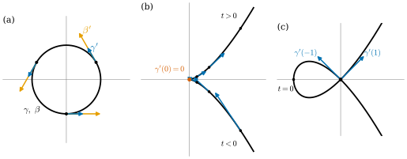
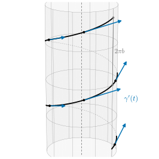

4.1 Parametrized Curves and Velocity Vectors
Goals
- 곡선을 “움직이는 점”, 즉 구간에서 \(\R^3\)으로 가는 smooth map으로 정의하고, map으로서의 곡선과 그 trace(점들의 집합)를 구분할 수 있다.
- 속도벡터와 속력을 계산하고, 속도벡터가 secant line 방향의 극한임을 설명할 수 있다.
- vector-valued function의 곱의 미분법으로 “크기가 일정한 vector-valued function은 자기 도함수와 orthogonal하다”를 증명하고 쓸 수 있다.
- smooth map의 trace에도 cusp가 생길 수 있음을 예로 보이고, 그 원인이 속도벡터가 \(0\)이 되는 데 있음을 안다.
Prerequisites
- \(\R^n\)의 vector space 구조와 standard basis \(e_1, e_2, e_3\): Example 1.1.2, Section 1.1의 standard basis
- \(\R^3\)의 inner product \(\inner{v}{w}\)과 norm \(\abs{v}\): Definition 1.5.1, Definition 1.5.4. 이 절에서는 \(\inner{v}{w} = \sum_{i=1}^3 v^i w^i\)와 \(\abs{v} = \sqrt{\inner{v}{v}}\)만 쓴다.
- smooth map: Definition 2.2.11. total derivative와 Jacobian matrix: Definition 2.1.1, Theorem 2.1.11
- 곡선에 대한 곱의 미분법과 chain rule: Proposition 2.2.5, Example 2.2.4, Example 2.2.6
Motivation
Part 0에서 linear algebra(Chapter 1), \(\R^n\)의 미적분(Chapter 2), topology의 언어(Chapter 3)를 준비했다. Chapter 2의 중심 생각은 “map을 한 점 근처에서 linear map으로 근사한다”는 것이었다. 이제 이 생각을 가장 단순한 휘어진 대상에 적용한다. 정의역의 dimension이 1인 map, 즉 곡선이다.
그런데 “곡선”이라는 말에는 두 가지 그림이 섞여 있다. 하나는 원 \(x^2 + y^2 = 1\)처럼 평면에 그려진 점들의 집합이고, 다른 하나는 시간이 흘러가면서 움직이는 점의 운동이다. 미적분을 쓰려면 두 번째 그림이 편하다. 운동은 시각 \(t\)마다 위치를 정해 주는 함수이고, 함수는 미분할 수 있기 때문이다. 미분하면 속도가 나온다.
이 절에서는 곡선을 운동, 곧 map으로 정의한다. 그러면 두 가지를 조심해야 한다.
- 같은 집합을 여러 가지 운동으로 그릴 수 있다. 빠르게 도는 원과 느리게 도는 원은 같은 원을 그리지만 속도가 다르다.
- map이 매끄러워도 그 trace가 매끄러워 보이지 않을 수 있다. 움직이는 점이 잠깐 멈췄다가 방향을 바꾸면 cusp가 생긴다.

0)와 아래쪽 가지(t<0) 위의 속도벡터가 원점에 가까울수록 짧아지고, 원점에서는 속도가 0이다. (c) 원점에서 스스로 교차하는 곡선. 원점에서 두 속도벡터 γ'(1)과 γ'(−1)이 서로 다른 방향을 가리킨다.">Parametrized Curves
이 study set에서 곡선의 정의역인 구간은 언제나 열린구간이다. 끝이 무한대여도 된다. 예를 들어 \((0, 1)\), \((0, \infty)\), \(\R = (-\infty, \infty)\)은 모두 열린구간이다. smooth 함수는 모든 차수의 도함수를 갖는 함수, 즉 \(C^\infty\) 함수다(Definition 2.2.11).
Definition 4.1.1 (parametrized curve). \(I \subseteq \R\)가 열린구간이라 하자. smooth map \(\gamma\colon I \to \R^3\)을 parametrized curve(매개곡선)이라 한다. 성분으로 쓰면
이고, “\(\gamma\)가 매끄럽다”는 것은 세 성분 함수 \(x, y, z\colon I \to \R\)가 모두 매끄럽다는 뜻이다. 변수 \(t\)를 \(\gamma\)의 매개변수(parameter)라 하고, image \(\gamma(I) = \{\gamma(t) : t \in I\} \subseteq \R^3\)을 \(\gamma\)의 trace(자취)라 한다.
정의의 요점은 곡선이 집합이 아니라 map이라는 것이다. 앞으로 “곡선 \(\gamma\)”라고 하면 map \(\gamma\)를 뜻하고, 점들의 집합을 말할 때는 반드시 “\(\gamma\)의 trace”라고 쓴다. 정의역을 열린구간으로 두는 것은 모든 \(t \in I\)에서 양쪽 극한으로 도함수를 정하기 위해서다. 매끄러움(\(C^\infty\))을 요구하는 것은 편의 때문이다. curvature에는 2계 도함수가, Chapter 5의 torsion에는 3계 도함수가 필요한데, 매번 “몇 번 미분가능하다”고 따지지 않아도 되게 한다.
trace가 \(xy\)평면 \(\{z = 0\}\)에 들어 있는 곡선, 즉 \(z(t) = 0\)인 곡선을 plane curve(평면곡선)이라 한다. plane curve는 셋째 성분을 떼어 \(\gamma(t) = (x(t), y(t))\)처럼 \(\R^2\)의 곡선으로 쓴다. 즉 \((x, y) \in \R^2\)를 \((x, y, 0) \in \R^3\)과 같은 것으로 본다.
Example 4.1.2 (line). \(p, v \in \R^3\)이고 \(v \neq 0\)일 때 \(\gamma(t) = p + tv\) (\(t \in \R\))는 parametrized curve이다. 성분은 \(t\)의 일차함수이므로 매끄럽다. trace는 \(p\)를 지나고 방향이 \(v\)인 직선이다. \(t = 0\)일 때 \(p\)에 있고, 시간 \(1\)이 지날 때마다 \(v\)만큼 이동한다.
Example 4.1.3 (circle, running example). \(r \gt 0\)일 때
는 plane curve이다. \((r\cos t)^2 + (r\sin t)^2 = r^2\)이므로 trace는 반지름 \(r\)인 원 \(x^2 + y^2 = r^2\)이고, \(t\)는 \(x\)축의 양의 부분에서 반시계 방향으로 잰 각이다. \(\gamma(t + 2\pi) = \gamma(t)\)이므로 이 곡선은 원을 무한히 여러 번 돈다. 정의역을 \((0, 2\pi)\)로 줄이면 원을 한 번 돌고, 이때 trace는 원에서 점 \((r, 0, 0)\) 하나를 뺀 것이다.
같은 원을 다른 방식으로 도는 곡선도 있다. \(\beta(t) = \gamma(2t) = (r\cos 2t,\ r\sin 2t,\ 0)\)은 두 배 빠르게 돌고, \(\gamma(-t) = (r\cos t,\ -r\sin t,\ 0)\)은 시계 방향으로 돈다. 세 곡선 모두 trace는 같은 원이지만 map으로서는 서로 다르다 (Figure 4.1.1(a)).
Example 4.1.4 (helix, running example). \(a \gt 0\), \(b \neq 0\)일 때
를 helix라 한다. 처음 두 성분은 반지름 \(a\)인 원을 그리고, 셋째 성분은 일정한 빠르기로 늘거나 준다. \(x^2 + y^2 = a^2\)이므로 trace는 cylinder \(x^2 + y^2 = a^2\) 위에 있다. 한 바퀴(\(t \mapsto t + 2\pi\)) 돌 때마다 높이가 \(2\pi b\)만큼 변한다(Figure 4.1.2). \(b \gt 0\)이면 위에서 내려다볼 때 반시계 방향으로 돌면서 올라가는데, 오른손 네 손가락을 도는 방향으로 감았을 때 엄지가 나아가는 방향을 가리키므로 right-handed helix라 한다.
Example 4.1.5 (graph of a function). \(f\colon I \to \R\)가 매끄러우면 \(\gamma(t) = (t, f(t))\)는 plane curve이고, trace는 \(f\)의 그래프다. 모든 그래프는 이렇게 trace가 된다. 그러나 원 전체는 어느 함수의 그래프도 아니다. \(x\)좌표 하나에 점이 두 개씩 있기 때문이다. 곡선을 map으로 정의하면 그래프가 아닌 모양도 한꺼번에 다룰 수 있다.
Non-example 4.1.6. (a) \(\gamma(t) = (t, \abs{t})\) (\(t \in \R\))는 parametrized curve가 아니다. 둘째 성분 \(\abs{t}\)가 \(t = 0\)에서 미분가능하지 않기 때문이다.
(b) 원 \(C = \{(x, y) : x^2 + y^2 = 1\}\) 자체는 parametrized curve가 아니다. \(C\)는 점들의 집합이지 map이 아니다. \(C\)는 Example 4.1.3의 여러 곡선의 trace이고, 어느 곡선을 고르느냐에 따라 다음 절들의 속도나 길이가 달라진다.
Velocity Vector and Speed
시각 \(t\)에서 \(t + h\)까지 점은 \(\gamma(t)\)에서 \(\gamma(t + h)\)로 옮겨 간다. 변위 \(\gamma(t + h) - \gamma(t)\)를 걸린 시간 \(h\)로 나눈 것이 평균속도이고, \(h \to 0\)일 때의 극한이 순간속도다.
Definition 4.1.7 (velocity vector and speed). parametrized curve \(\gamma\colon I \to \R^3\)과 \(t \in I\)에 대하여
를 \(t\)에서 \(\gamma\)의 속도벡터(velocity vector)라 하고, 그 길이 \(\abs{\gamma'(t)}\)를 속력(speed)이라 한다.
벡터의 극한은 성분별로 잰다. 그래서 (4.1.4)의 두 번째 등호는 각 성분에서 도함수의 정의 그대로다. \(\gamma'\)도 \(I\)에서 \(\R^3\)으로 가는 smooth map이므로 다시 미분할 수 있다. \(\gamma''(t)\)를 가속도벡터라 부른다.
분자 \(\gamma(t + h) - \gamma(t)\)는 두 점 \(\gamma(t)\)와 \(\gamma(t + h)\)를 잇는 secant line의 방향이다. 따라서 \(\gamma'(t) \neq 0\)이면 secant line의 방향은 \(h \to 0\)일 때 \(\gamma'(t)\)의 방향으로 다가간다. 속도벡터는 곡선에 “접하는” 방향을 준다. \(\gamma'(t) = 0\)일 때 무슨 일이 생기는지는 아래 Non-example 4.1.9에서 본다.
Example 4.1.8 (velocity of the circle and the helix). (a) Example 4.1.3의 원 \(\gamma(t) = (r\cos t, r\sin t, 0)\)의 속도와 속력은 Example 2.1.15에서 구했다.
이다. 속력은 반지름과 같은 상수다. 또 \(\inner{\gamma(t)}{\gamma'(t)} = -r^2\cos t\sin t + r^2 \sin t\cos t + 0 = 0\)이므로 속도벡터는 위치벡터(반지름 방향)와 orthogonal하다. 원의 접선이 반지름과 수직이라는 사실이다. 두 배 빠른 원 \(\beta(t) = \gamma(2t)\)은 성분별로 미분해 \(\beta'(t) = (-2r\sin 2t,\ 2r\cos 2t,\ 0) = 2\gamma'(2t)\)를 얻는다. \(\beta\)는 시각 \(t\)에 \(\gamma\)가 시각 \(2t\)에 있던 점을 지나므로, 같은 점에서 비교하면 속도가 정확히 두 배다(Figure 4.1.1(a)).
(b) Example 4.1.4의 helix도 Example 2.1.15에서
이다. 속력이 일정하다. 속도의 셋째 성분 \(b\)도 일정하므로 속도벡터는 \(z\)축과 일정한 각을 이룬다(Exercise 4.1.3, Figure 4.1.2).
Verification: verify/v-4-1-parametrized-curves.py

속도벡터는 곡선(map)에 속한 것이지 trace에 속한 것이 아니다. 같은 원이라도 \(\gamma\)와 \(\beta\)의 속도는 다르다. 다음 두 예는 이 차이가 더 극적으로 드러나는 경우다.
Non-example 4.1.9 (smooth map with a cusped trace). “smooth map의 trace는 매끄러워 보인다”는 추측은 틀렸다. \(\gamma(t) = (t^2, t^3)\) (\(t \in \R\))은 성분이 다항식이므로 smooth plane curve이다. \(x = t^2\), \(y = t^3\)에서 \(y^2 = t^6 = x^3\)이므로 trace는 곡선 \(y^2 = x^3\)이다(Figure 4.1.1(b)). 이 trace는 원점에서 뾰족하다. 위쪽 가지 \(y = x^{3/2}\)와 아래쪽 가지 \(y = -x^{3/2}\)가 원점에서 둘 다 \(x\)축에 붙으면서 만난다.
원인은 속도에 있다. \(\gamma'(t) = (2t, 3t^2)\)이므로 \(\gamma'(0) = (0, 0)\)이다. 속도의 방향을 보면, \(t \neq 0\)일 때
이다. \(t \to 0^{+}\)이면 이 방향은 \((1, 0)\)으로, \(t \to 0^{-}\)이면 \((-1, 0)\)으로 간다. 점은 아래쪽 가지를 따라 왼쪽으로 달려와 원점에서 멈추고, 정반대 방향으로 위쪽 가지를 따라 떠난다. 멈춘 순간(\(\gamma'(0) = 0\))에 방향이 뒤집히는 것이 cusp의 정체다.
Verification: verify/v-4-1-parametrized-curves.py
Example 4.1.10 (self-intersecting curve). \(\gamma(t) = (t^2 - 1,\ t^3 - t)\) (\(t \in \R\))은 \(\gamma(1) = \gamma(-1) = (0, 0)\)이므로 injective가 아니다. \(y = t(t^2 - 1) = tx\)이므로 \(y^2 = t^2x^2 = (x + 1)x^2\)이 trace의 방정식이다(Figure 4.1.1(c)). \(\gamma'(t) = (2t,\ 3t^2 - 1)\)에서 원점을 지나는 두 순간의 속도는 \(\gamma'(1) = (2, 2)\), \(\gamma'(-1) = (-2, 2)\)로 서로 다르다. 그래서 “trace의 점 \((0,0)\)에서의 속도”라는 말은 뜻이 없다. 속도는 점이 아니라 매개변수의 값 \(t\)에 붙는다. 한편 이 곡선의 속도는 결코 \(0\)이 되지 않는다. \(2t = 0\)이면 \(t = 0\)이고, 그때 \(3t^2 - 1 = -1 \neq 0\)이기 때문이다.
Differentiating Vector-Valued Functions
곡선을 다룰 때는 vector-valued function의 합, 스칼라배, inner product를 미분하는 일이 많다. 필요한 규칙은 모두 Chapter 2에서 증명했다. 이 장에서 자주 쓰므로 곡선에 맞는 형태로 한곳에 모아 둔다. 벡터 \(\alpha(t)\)의 성분은 Chapter 1의 규약대로 위첨자로 \(\alpha(t) = (\alpha^1(t), \alpha^2(t), \alpha^3(t))\)처럼 쓴다. 위첨자는 거듭제곱이 아니다.
Proposition 4.1.11 (product rule and chain rule, recalled from Chapter 2). \(\alpha, \beta\colon I \to \R^3\)과 \(f\colon I \to \R\)가 매끄럽다고 하자.
- (a) \((\alpha + \beta)' = \alpha' + \beta'\)이고 \((f\alpha)' = f'\alpha + f\alpha'\)이다.
- (b) \(\inner{\alpha}{\beta}' = \inner{\alpha'}{\beta} + \inner{\alpha}{\beta'}\)이다.
- (c) \(\tilde I\)가 열린구간이고 \(h\colon \tilde I \to I\)가 매끄러우면 \(\alpha \circ h\)도 매끄럽고 \((\alpha \circ h)'(u) = h'(u)\,\alpha'(h(u))\)이다.
Proof. (a)와 (b)는 Proposition 2.2.5를 정의역이 구간인 경우에 쓴 것이고, (b)는 거기의 (2.2.3) 그대로다. (c)는 Example 2.2.4이고, 매끄러움은 Proposition 2.2.12에서 나온다. 성분으로 풀어 쓰면 모두 1변수 함수의 합, 곱, 합성의 미분법이다. 예를 들어 (b)는 \(\inner{\alpha}{\beta} = \sum_{i=1}^3 \alpha^i\beta^i\)의 각 항에 곱의 미분법을 쓴 것이다.
(c)는 Theorem 2.2.1의 chain rule \(D(\alpha \circ h)(u) = D\alpha(h(u)) \circ Dh(u)\)의 가장 단순한 경우다. 다음 따름정리는 짧지만 이 장과 다음 장에서 되풀이해 쓴다. Example 2.2.6에서 sphere 위의 곡선에 대해 본 사실을 일반적인 vector-valued function으로 적은 것이다.
Corollary 4.1.12 (vector-valued function of constant norm). smooth \(\alpha\colon I \to \R^3\)에 대하여 다음 두 조건은 동치다.
- (a) \(\abs{\alpha(t)}\)가 \(I\)에서 상수다.
- (b) 모든 \(t \in I\)에서 \(\inner{\alpha(t)}{\alpha'(t)} = 0\)이다.
특히 \(\abs{\alpha(t)} = 1\)인 함수의 도함수는 언제나 \(\alpha\) 자신과 orthogonal하다.
Proof. Proposition 4.1.11(b)에서 \(\beta = \alpha\)로 두면 \(\big(\abs{\alpha}^2\big)' = \inner{\alpha}{\alpha}' = 2\inner{\alpha}{\alpha'}\)이다. (a)이면 \(\abs{\alpha}^2\)이 상수이므로 도함수가 \(0\)이고, 따라서 (b)이다. (b)이면 \(\abs{\alpha}^2\)의 도함수가 구간 \(I\) 전체에서 \(0\)이므로 평균값 정리에 의해 \(\abs{\alpha}^2\)은 상수이고, 따라서 \(\abs{\alpha}\)도 상수다.
기하적으로 읽으면, 원점을 중심으로 하는 sphere 위를 움직이는 점의 속도는 언제나 위치벡터와 orthogonal하다. Example 4.1.8(a)에서 원에 대해 직접 계산한 사실이 바로 이것이다. 이 장에서 계속 쓸 sphere 위의 곡선을 여기서 소개해 둔다.
Example 4.1.13 (circles of latitude and meridians on the sphere). 반지름 \(r\)인 sphere \(S^2(r) = \{p \in \R^3 : \abs{p} = r\}\)의 점을 기준 식
로 나타내자. \(\theta\)는 북극 방향(\(z\)축의 위쪽)에서 잰 각(여위도)이고 \(\varphi\)는 경도다. 이 식이 sphere의 parametrization이라는 것은 Example 6.1.7에서 다룬다. 여기서는 한 변수를 고정해 얻는 곡선만 쓴다.
- \(\theta = \theta_0\)을 고정한 곡선 \(\gamma(\varphi) = \mathbf{x}(\theta_0, \varphi) = (r\sin\theta_0\cos\varphi,\ r\sin\theta_0\sin\varphi,\ r\cos\theta_0)\)을 여위도 \(\theta_0\)인 circle of latitude(위도원)이라 한다. trace는 평면 \(z = r\cos\theta_0\) 위에 있는, 중심이 \((0, 0, r\cos\theta_0)\)이고 반지름이 \(r\sin\theta_0\)인 원이다. \(\theta_0 = \pi/2\)일 때가 적도다.
- \(\varphi = \varphi_0\)을 고정한 곡선 \(\sigma(\theta) = \mathbf{x}(\theta, \varphi_0) = (r\sin\theta\cos\varphi_0,\ r\sin\theta\sin\varphi_0,\ r\cos\theta)\)을 meridian(경선)이라 한다. trace는 북극과 남극을 잇는 반원이다. 이 반원은 원점을 지나는 평면 \(\{p : \inner{p}{(-\sin\varphi_0, \cos\varphi_0, 0)} = 0\}\)과 sphere가 만나는 원의 절반이다. 원점을 지나는 평면과 sphere가 만나서 생기는 반지름 \(r\)인 원을 great circle(대원)이라 한다. 적도도 great circle이다.
두 곡선 모두 \(\abs{\gamma} = \abs{\sigma} = r\)이므로 Corollary 4.1.12에 의해 속도가 위치와 orthogonal하다. circle of latitude에서는 \(\gamma'(\varphi) = (-r\sin\theta_0\sin\varphi,\ r\sin\theta_0\cos\varphi,\ 0)\)이고, \(\inner{\gamma}{\gamma'} = 0\)을 Example 2.2.6에서 직접 계산해 확인했다. circle of latitude와 great circle이 얼마나 휘어 있는지는 Section 4.5에서 계산한다.
Verification: verify/v-4-1-parametrized-curves.py
Summary
- parametrized curve는 열린구간에서 \(\R^3\)으로 가는 smooth map \(\gamma\)이고, 그 image \(\gamma(I)\)가 trace다. 곡선은 map이고, 같은 trace를 그리는 곡선은 많다.
- 속도벡터 \(\gamma'(t)\)는 성분별 도함수이고, secant line 방향의 극한이다. 원의 속력은 \(r\), helix의 속력은 \(\sqrt{a^2 + b^2}\)이다.
- \(\inner{\alpha}{\beta}' = \inner{\alpha'}{\beta} + \inner{\alpha}{\beta'}\)이고, 크기가 일정한 vector-valued function은 자기 도함수와 orthogonal하다(Corollary 4.1.12).
- smooth curve의 trace도 뾰족할 수 있다. \((t^2, t^3)\)은 \(t = 0\)에서 속도가 \(0\)이 되며 방향을 뒤집는다(Non-example 4.1.9).
- sphere 위의 circle of latitude와 meridian(great circle의 일부)을 소개했다. 두 곡선의 속도는 위치벡터와 orthogonal하다.
다음 절에서는 속도가 한 번도 \(0\)이 되지 않는 곡선, 즉 regular curve를 정의하고 regular curve에는 cusp가 생기지 않음을 보인다. 또 속력을 적분해 곡선의 길이를 정의한다.
Exercises
Exercise 4.1.1 ★ \(\gamma(t) = (t, t^2, t^3)\) (\(t \in \R\))의 속도, 속력, 가속도를 구하여라. 속도벡터가 \(xy\)평면과 평행한(셋째 성분이 \(0\)인) 순간은 언제인가? 속도가 \(0\)이 되는 순간이 있는가?
Solution
성분별로 미분하면 \(\gamma'(t) = (1, 2t, 3t^2)\), \(\abs{\gamma'(t)} = \sqrt{1 + 4t^2 + 9t^4}\), \(\gamma''(t) = (0, 2, 6t)\)이다. 셋째 성분 \(3t^2\)이 \(0\)인 것은 \(t = 0\)일 때뿐이고, 그때 \(\gamma'(0) = (1, 0, 0)\)이다. 첫째 성분이 늘 \(1\)이므로 속도는 결코 \(0\)이 되지 않는다.
Verification: verify/v-4-1-parametrized-curves.py
Exercise 4.1.2 ★ \(A \gt B \gt 0\)일 때 타원 \(\gamma(t) = (A\cos t, B\sin t)\) (\(t \in \R\))의 trace가 \(x^2/A^2 + y^2/B^2 = 1\)임을 보이고, 속력이 가장 큰 점과 가장 작은 점을 구하여라.
Hint
\(\abs{\gamma'(t)}^2\)을 \(\sin^2 t\)만의 식으로 정리한다.
Solution
\((A\cos t)^2/A^2 + (B\sin t)^2/B^2 = \cos^2 t + \sin^2 t = 1\)이므로 trace는 타원 위에 있다. 거꾸로 타원 위의 점 \((x, y)\)는 \((x/A)^2 + (y/B)^2 = 1\)이므로 \((x/A, y/B) = (\cos t, \sin t)\)인 \(t\)가 있고, 따라서 trace는 타원 전체다.
\(\gamma'(t) = (-A\sin t, B\cos t)\)이므로 \(\abs{\gamma'(t)}^2 = A^2\sin^2 t + B^2\cos^2 t = B^2 + (A^2 - B^2)\sin^2 t\)이다. \(A^2 - B^2 \gt 0\)이므로 속력은 \(\sin^2 t = 1\)일 때 최대 \(A\), \(\sin^2 t = 0\)일 때 최소 \(B\)이다. 즉 짧은 축의 끝 \((0, \pm B)\)에서 가장 빠르고 긴 축의 끝 \((\pm A, 0)\)에서 가장 느리다. (이 타원은 Section 4.3의 그림에 다시 나온다.)
Verification: verify/v-4-1-parametrized-curves.py
Exercise 4.1.3 ★ helix (4.1.3)의 속도벡터와 \(e_3 = (0,0,1)\) 사이의 각 \(\psi\)가 \(t\)에 무관하게 \(\cos\psi = b/\sqrt{a^2 + b^2}\)임을 보여라.
Solution
두 영이 아닌 벡터 사이의 각은 \(\cos\psi = \inner{u}{v}/(\abs{u}\abs{v})\)로 정한다. (4.1.6)에서 \(\inner{\gamma'(t)}{e_3} = b\), \(\abs{\gamma'(t)} = \sqrt{a^2 + b^2}\), \(\abs{e_3} = 1\)이므로 \(\cos\psi = b/\sqrt{a^2 + b^2}\)이다. 이 값은 \(t\)를 포함하지 않는다.
Verification: verify/v-4-1-parametrized-curves.py
Exercise 4.1.4 ★ 참인지 거짓인지 판별하고 이유를 대어라. (a) 두 parametrized curve의 trace가 같으면, 같은 점을 지날 때의 속도벡터도 같다. (b) 구간 \(I\) 전체에서 \(\gamma' = 0\)이면 \(\gamma\)는 상수 map이다. (c) parametrized curve의 trace에는 cusp가 생길 수 없다. (d) \(\gamma(t) = (\cos t^3, \sin t^3, 0)\)의 \(t = 0\)에서의 속도는 \(0\)이다.
Solution
(a) 거짓. Example 4.1.3의 \(\gamma\)와 \(\beta\)는 trace가 같지만 같은 점에서 \(\beta\)의 속도가 \(\gamma\)의 두 배다.
(b) 참. 각 성분의 도함수가 \(I\) 전체에서 \(0\)이므로, 평균값 정리에 의해 각 성분은 구간 \(I\)에서 상수다.
(c) 거짓. Non-example 4.1.9의 \((t^2, t^3)\)이 반례다.
(d) 참. chain rule로 \(\gamma'(t) = 3t^2(-\sin t^3, \cos t^3, 0)\)이므로 \(\gamma'(0) = 0\)이다. trace는 매끈한 원인데도 속도가 \(0\)이 되는 순간이 있다. 속도가 \(0\)이 된다고 해서 늘 cusp가 생기는 것은 아니다.
Exercise 4.1.5 ★★ \(\gamma\colon I \to \R^3\)이 parametrized curve이고 \(p \in \R^3\)이라 하자. 함수 \(t \mapsto \abs{\gamma(t) - p}\)가 \(t_0 \in I\)에서 극솟값(또는 극댓값)을 가지면 \(\gamma(t_0) - p\)와 \(\gamma'(t_0)\)가 orthogonal함을 보여라. 이것을 써서 포물선 \(\gamma(t) = (t, t^2)\) 위에서 점 \(p = (0, 1)\)에 가장 가까운 점을 구하여라. [dC §1-2 Exercise 2, modified]
Hint
제곱한 함수 \(f(t) = \abs{\gamma(t) - p}^2\)을 쓰면 제곱근을 미분하지 않아도 된다.
Solution
\(f(t) = \abs{\gamma(t) - p}^2 = \inner{\gamma(t) - p}{\gamma(t) - p}\)로 두자. \(\abs{\gamma - p} \ge 0\)이고 \(x \mapsto x^2\)은 \([0, \infty)\)에서 증가하므로 \(\abs{\gamma - p}\)의 극값은 \(f\)의 극값이다. \(f\)는 미분가능하고 \(t_0\)은 열린구간 \(I\)의 점이므로 \(f'(t_0) = 0\)이다. Proposition 4.1.11(b)에서 \(f' = 2\inner{\gamma'}{\gamma - p}\)이므로 \(\inner{\gamma'(t_0)}{\gamma(t_0) - p} = 0\)이다.
포물선에서는 \(f(t) = t^2 + (t^2 - 1)^2 = t^4 - t^2 + 1\), \(f'(t) = 4t^3 - 2t = 2t(2t^2 - 1)\)이다. critical point는 \(t = 0,\ \pm 1/\sqrt2\)이고 \(f(0) = 1\), \(f(\pm 1/\sqrt2) = 1/4 - 1/2 + 1 = 3/4\)이다. \(t \to \pm\infty\)이면 \(f \to \infty\)이므로 최솟값은 \(3/4\)이고, 가장 가까운 점은 \((\pm 1/\sqrt2,\ 1/2)\), 거리는 \(\sqrt3/2\)이다(\(t = 0\)은 극대). 확인: \(t_0 = 1/\sqrt2\)에서 \(\gamma(t_0) - p = (1/\sqrt2, -1/2)\), \(\gamma'(t_0) = (1, \sqrt2)\)이고 inner product는 \(1/\sqrt2 - \sqrt2/2 = 0\)이다.
Verification: verify/v-4-1-parametrized-curves.py
Exercise 4.1.6 ★★ \(v \in \R^3\)이 영이 아닌 고정된 벡터이고 모든 \(t \in I\)에서 \(\inner{\gamma'(t)}{v} = 0\)이라 하자. \(\gamma\)의 trace가 \(v\)에 수직인 한 평면에 들어 있음을 보여라. 역으로 trace가 \(v\)에 수직인 평면에 들어 있으면 \(\inner{\gamma'}{v} = 0\)임을 보여라. [dC §1-2 Exercise 4, modified]
Solution
\(g(t) = \inner{\gamma(t)}{v}\)로 두자. Proposition 4.1.11(b)와 \(v' = 0\)에서 \(g'(t) = \inner{\gamma'(t)}{v} = 0\)이다. 구간에서 도함수가 \(0\)이므로 평균값 정리에 의해 \(g\)는 상수 \(c\)이다. 따라서 trace는 평면 \(\{p : \inner{p}{v} = c\}\)에 들어 있고, 이 평면은 \(v\)에 수직이다.
역으로 모든 \(t\)에서 \(\inner{\gamma(t)}{v} = c\)이면 양변을 미분해 \(\inner{\gamma'(t)}{v} = 0\)이다.
Exercise 4.1.7 ★★ \(f\colon \R \to \R\)를 Example 2.2.20의 함수(\(t \gt 0\)이면 \(f(t) = e^{-1/t}\), \(t \le 0\)이면 \(f(t) = 0\))라 하자. \(\gamma(t) = \big(f(t) - f(-t),\ f(t) + f(-t)\big)\)가 smooth plane curve이고, 그 trace가 꺾인 선 \(\{(x, \abs{x}) : \abs{x} \lt 1\}\)임을 보여라. \(\gamma'(0)\)은 무엇인가? (Non-example 4.1.6(a)의 \((t, \abs{t})\)는 parametrized curve가 아니었지만, 같은 꺾인 선을 trace로 갖는 smooth curve는 있다.)
Hint
\(t \gt 0\)이면 \(f(-t) = 0\)이다. \(f\)가 \((0, \infty)\)에서 어떤 값들을 갖는지 본다.
Solution
Example 2.2.20에서 \(f\)는 매끄럽고 모든 \(k\)에 대하여 \(f^{(k)}(0) = 0\)이다. \(t \mapsto f(-t)\)도 매끄러우므로(chain rule) \(\gamma\)의 두 성분은 매끄럽다.
\(t \gt 0\)이면 \(f(-t) = 0\)이므로 \(\gamma(t) = (f(t), f(t))\)이다. \((0, \infty)\)에서 \(f'(t) = e^{-1/t}/t^2 \gt 0\)이고 \(\lim_{t \to 0^+} f(t) = 0\), \(\lim_{t \to \infty} f(t) = 1\)이므로, intermediate value theorem(Corollary 3.7.6)에 의해 \(f\)는 \((0, \infty)\)에서 \((0, 1)\) 위로 가는 증가함수다. 따라서 이 부분의 trace는 \(\{(x, x) : 0 \lt x \lt 1\}\)이다. \(t \lt 0\)이면 \(f(t) = 0\)이므로 \(\gamma(t) = (-f(-t), f(-t))\)이고, 같은 이유로 trace는 \(\{(x, -x) : -1 \lt x \lt 0\}\)이다. \(\gamma(0) = (0,0)\)이다. 합치면 trace는 \(\{(x, \abs{x}) : \abs{x} \lt 1\}\)이다.
\(\gamma'(t) = \big(f'(t) + f'(-t),\ f'(t) - f'(-t)\big)\)이고 \(f'(0) = 0\)이므로 \(\gamma'(0) = (0, 0)\)이다. 점은 꺾인 점에서 반드시 멈춘다. 멈추지 않는 곡선, 곧 Section 4.2의 regular curve에는 이런 꺾인 점이 생길 수 없다.
Verification: verify/v-4-1-parametrized-curves.py